Nie tak dawno temu,
w nie tak odległym
Laboratorium EE…
eenet
Zrąb do aplikacji usprawniających pracę biurową
- Patryk Hes
- Paweł Kamiński
- Borys Popławski
- Robert Tomkowski
Problemy
a w zasadzie, dużo małych problemów:
- Kto pracuje przy jakim projekcie?
- Jakie formalności załatwić, żeby wziąć urlop?
- Ktoś mi ukradł monitor!
- Kto ma dostęp do tego serwera?
Zatem zróbmy zrąb!
Zrąb — szkielet, wiązanie budowli; podstawa, zarys czegoś; (za SJP PWN)
Potocznie zwany frameworkiem.
Przydałby się zrąb do tworzenia prostych aplikacji biurowych.
Plan działania: zróbmy zrąb oraz kilka przykładowych wtyczek.
Specyfika Lab EE
Języki, biblioteki i frameworki
- Back-end: Python
- Front-end: JavaScript
Języki, biblioteki i frameworki
Back-end:
- python-social-auth — zapewnia logowanie kontem Google
- django-rest-framework — przyjazne i ustandaryzowane formaty odpowiedzi serwera
Front-end:
- jQuery — (używane przez AngularJS) manipulacja elementami drzewa DOM
- Lo-Dash — manipulacja strukturami danych
Języki, biblioteki i frameworki
Back-end:
- django — jakie jest, każdy widzi
Front-end:
- AngularJS — framework MVW do tworzenia single-page applications, zmienia podejście do pisania front-endu z imperatywnego na deklaratywne
Efekty pracy
Podział logiki biznesowej na wtyczki
Efekty pracy
Wtyczka Użytkownicy
Efekty pracy
Wtyczka Użytkownicy

Efekty pracy
Wtyczka Użytkownicy

Efekty pracy
Wtyczka Urlopownik
Efekty pracy
Wtyczka Zasoby
TODO
Efekty pracy
Jak napisać wtyczkę